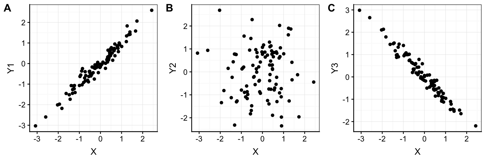
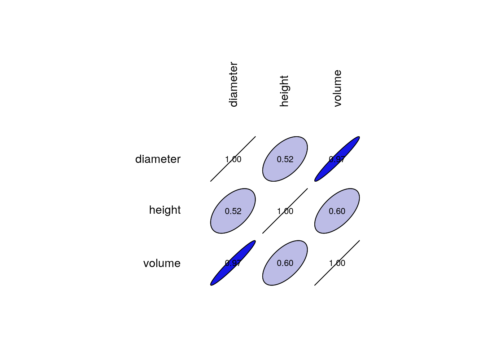
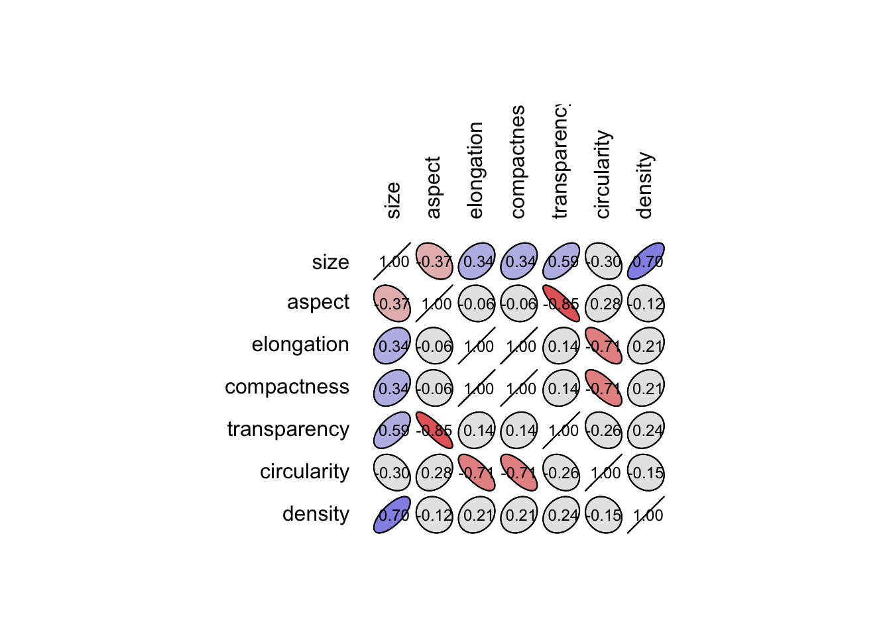
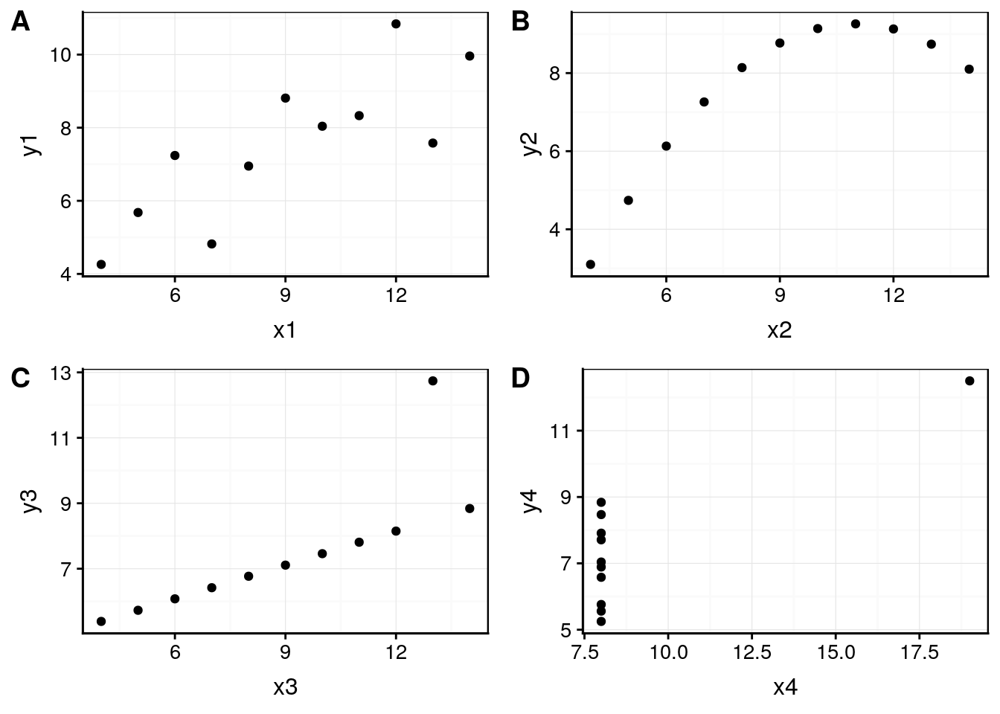
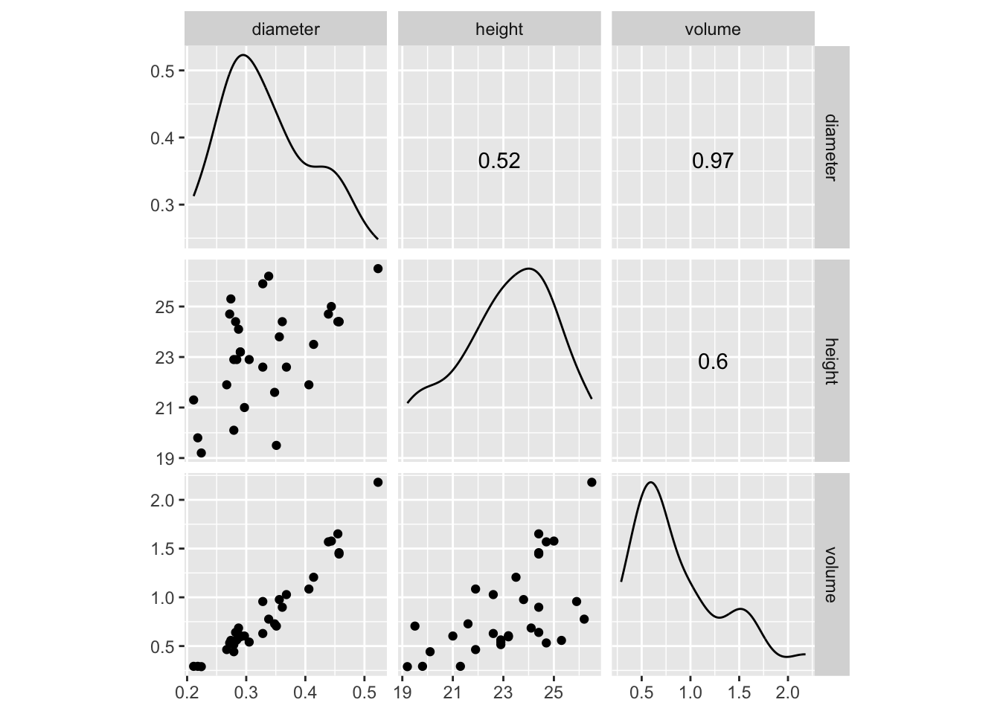

12.1 Association de deux variables
A vous de jouer
Afin d’appliquer directement les concepts vu au cours dans ce module, ouvrez RStudio dans votre SciViews Box, puis exécutez l’instruction suivante dans la fenêtre console :
BioDataScience::run("12a_correlation")Nous pouvons décrire l’étendue d’une variable numérique à l’aide de la variance qui, pour rappel est la somme des écarts à la moyenne divisée par le nombre de degrés de liberté (n dans le cas d’une population et n - 1 dans le cas d’un échantillon).
\[var_X = S^2_X = \frac{\sum_{i = 1}^n (x_i - \bar{X})^2}{n-1}\] L’écart type, noté \(\sigma\) dans le cas d’une population et \(S\) dans le cas d’un échantillon est la racine carrée de la variance. C’est une autre mesure de la dispersion d’une variable numérique. Donc :
\[S_X = \sqrt{S^2_X}\]
Plus la variance est élevée, plus les observations sont dispersées autour de la moyenne. Lorsque nous avons affaire à deux variables numériques, une représentation de l’une par rapport à l’autre se fait naturellement à l’aide d’un graphique en nuage de points. Voici trois situations fictives différentes (Y1, Y2 et Y3 en fonction de X) :

Nous pouvons observer que la forme du nuage de points diffère entre ces trois situations. Le graphique A est allongé le long d’une oblique proche de la première bissectrice. Cela signifie que, lorsque des valeurs de X sont faibles, les valeurs de Y1 sont faibles aussi. Lorsque les valeurs de X sont élevées, celles de Y1 tendent à l’être également. Nous avons plutôt une proportionnalité entre les valeurs observées pour X et pour Y1. Dans le graphique C de droite, c’est l’inverse. Nous avons une proportionnalité inverse entre X et Y3. Dans le graphique B du centre, le nuage de point ne s’étire pas dans une direction oblique particulière. Nous dirons ici qu’il n’y a pas d’association entre X et Y2. Ce type d’association entre deux variables numérique est un élément important dans notre analyse car un nuage de points qui s’allonge le long d’une direction oblique sur le graphique est signe d’un mécanisme sous-jacent responsable de cette association (mais attention à ne pas conclure directement à un mécanisme de cause à effet direct, voir plus loin). Il serait donc souhaitable de pouvoir quantifier le degré d’une telle association.
Nous pouvons définir la covariance comme étant une mesure de la variance dans le même sens pour toutes les paires de valeurs observées entre nos deux vairables numériques. Elle se définit de manière très similaire à la variance mais fait naturellement intervenir simultanément les observations de X et Y, ainsi que leurs moyennes respectives :
\[cov_{X,Y} = \frac{\sum_{i = 1}^n (x_i - \bar{X}) \cdot (y_i - \bar{Y})}{n-1}\]
Voyons ce que cela donne dans notre exemple fictif contenu dans un data frame nommé `df :
cov(df$X, df$Y1)# [1] 0.9336631cov(df$X, df$Y2)# [1] 0.004064163cov(df$X, df$Y3)# [1] -0.9230542La covariance (fonction cov() dans R) fait effectivement le boulot de quantifier l’association entre les deux variables X et Y. Nous avons une valeur positive entre X et Y1, faible et se rapprochant de zéro entre X et Y2, et négative pour le cas X et Y3 d’une proportionnalité inverse. Cette mesure n’est cependant pas normée, c’est-à-dire qu’elle peut varier vers des valeurs très grandes ou très petites en fonction des données. Donc pour une même forme de nuage de points, la valeur dépendra, par exemple, des unités de mesure choisies. Si je transforme les données de mon jeu fictif df en les multipliant par dix pour simuler un changement d’unité dans df2, j’obtiens :
df2 <- df * 10
cov(df2$X, df2$Y1)# [1] 93.36631cov(df2$X, df2$Y2)# [1] 0.4064163cov(df2$X, df2$Y3)# [1] -92.30542C’est embêtant, puisque la forme du nuage de points n’a, lui, pas changé du tout. Le coefficient de corrélation de Pearson, noté r, est une autre mesure qui est normée de telle façon qu’il valle +1 pour une proportionnalité directe parfaite (les points sont strictement alignés le long d’une droite) et -1 lorsque la proportionnalité est inverse parfaite (et toujours 0 en cas de non-association).
\[cor_{X,Y} = r_{X,Y} = \frac{cov_{X,Y}}{\sqrt{S^2_X \cdot S^2_Y}} = \frac{cov_{X,Y}}{\sqrt{S^2_X} \cdot \sqrt{S^2_Y}} = \frac{cov_{X,Y}}{S_X \cdot S_Y}\]
C’est grâce à la division par le produit des écarts types de X et Y que nous arrivons à normer correctement le coefficient. Celui-ci peut se calculer à l’aide de la fonction cor() dans R. Cela donne :
cor(df$X, df$Y1)# [1] 0.9781819cor(df2$X, df2$Y1)# [1] 0.9781819cor(df$X, df$Y2)# [1] 0.003939552cor(df2$X, df2$Y2)# [1] 0.003939552cor(df$X, df$Y3)# [1] -0.979511cor(df2$X, df2$Y3)# [1] -0.979511Cette fois-ci, nous obtenons la même valeur pour r que le calcul se fasse à partir de df ou de df2. De plus les valeurs absolues très proches de 1 (0,978 dans le cas A et 0,923 dans le cas C) suggèrent que la proportionnalité est très forte. C’est effectivement ce que nous observons également sur les graphiques.
Faites attention à deux points importants.
- Le coefficient de corrélation de Pearson mesure une association linéaire entre deux variables numériques. La figure suivante montre quelques nuages de points et les valeurs de r associées.

Exemples de nuages de points et leur coefficients de corrélation de Pearson associés, issu de https://commons.wikimedia.org/w/index.php?curid=15165296.
- L’existence d’une corrélation n’implique pas forcément que la variation d’une des deux variables est le résultat de la variation de l’autre (cause à effet). Il se peut, par exemple qu’il y ait une troisième variable non prise en compte qui soit à l’origine de la variation, directement ou indirectement des deux autres. Une variable particulièrement pernicieuse de ce point de vue est le temps. A peu près tout ce qu’on étudie en biologie est variable dans le temps. Et donc, bien souvent, il existe des corrélations entre des variables qui n’ont rien à voir l’une avec l’autre lorsqu’elles sont toutes deux mesurées à différents moments, ce qu’on appelle des séries temporelles ou chronologiques. La vidéo suivante apporte d’autres éclaircissements sur ce sujet, sur base d’un exemple tiré de la littérature scientifique.
L’association entre deux variables numériques peut ainsi s’envisager selon trois niveaux impliquant des hypothèses de plus en plus fortes quant aux mécanismes responsables de cette association :
La corrélation. Ici les deux variables numériques sont sur le même pied d’égalité. Nous nous bornons à observer l’association sans élaborer plus d’explication sur son existence. C’est le coefficient de corrélation qui la quantifie.
La relation. Ici, nous modélisons l’association, par exemple par une droite, dite droite de régression. Nous verrons cet outil très important des statistiques et de la science des données dans la partie modélisation du cours de Science des Données Biologiques II. Dans ce cas, nous considérons qu’un mécanisme sous-jacent est responsable de la forme du nuage de points, et nous considérons qu’une fonction mathématique peut être utilisée pour prédire les valeurs d’une variable connaissant celles de l’autre.
La causalité. En plus de la relation, nous considérons que c’est la variation d’une des deux variables qui est à l’origine, directement ou indirectement de la variation de l’autre. Une relation de cause à effet ne peut être démontrée de manière sûre que par l’expérience, comme expliqué dans la vidéo plus haut.
12.1.1 Matrice de corrélation
Dans un cas multivarié (plus de deux variables), nous pouvons toujours étudier les associations entre variables numériques à l’aide de r (ou à l’aide de la covariance) à conditions de calculer ces descripteurs statistiques pour tous les couples de variables considérées deux à deux. Pour N variables, nous rassemblerons tous ces calculs dans une matrice carrée N par N qui croise tous les cas deux à deux possibles dans un même tableau.
Prenons un exemple à trois variables. Le jeu de données trees rassemble la mesure du diamètre, de la hauteur et du volume de bois de cerisiers noirs. La matrice de corrélation peut se calculer à l’aide de cor() dans R, ou mieux, à l’aide de correlation() dans SciViews::R. Dans ce dernier cas, la fonction summary() peut être appliquée dessus pour obtenir une vision synthétique de la matrice de corrélation.
trees <- read("trees", package = "datasets")
head(trees)# # A tibble: 6 x 3
# diameter height volume
# <dbl> <dbl> <dbl>
# 1 0.211 21.3 0.292
# 2 0.218 19.8 0.292
# 3 0.224 19.2 0.289
# 4 0.267 21.9 0.464
# 5 0.272 24.7 0.532
# 6 0.274 25.3 0.558trees_cor <- correlation(trees)
trees_cor# Matrix of Pearson's product-moment correlation:
# (calculation uses everything)
# diameter height volume
# diameter 1.000 0.519 0.967
# height 0.519 1.000 0.597
# volume 0.967 0.597 1.000Vous noterez que :
- Les éléments sur la diagonale de la matrice de corrélation valent toujours 1. En effet, il s’agit de la corrélation d’une variable en fonction d’elle-même, or
\[r_{X,X} = 1\] - Le triangle inférieur et le triangle supérieur (de part et d’autre de la diagonale) sont identiques, ou si vous préférez, sont comme le reflet dans un miroir l’un de l’autre. C’est parce que le coefficient de corrélation de X et Y est toujours le même que celui de Y et X.
\[r_{X,Y} = r_{Y,X}\]
Pour ces raisons seul le triangle inférieur (ou supérieur) est informatif. Le reste (diagonale et autre triangle) sont triviaux et répétitifs. Vous trouverez parfois une représentation de la matrice de confusion sous la forme uniquement du triangle inférieur. La fonction summary() effectue une telle représentation, et simplifie encore la représentation pour aider à trouver les corrélations importantes dans un gros tableau.
summary(trees_cor)# Matrix of Pearson's product-moment correlation:
# (calculation uses everything)
# d h v
# diameter 1
# height . 1
# volume B . 1
# attr(,"legend")
# [1] 0 ' ' 0.3 '.' 0.6 ',' 0.8 '+' 0.9 '*' 0.95 'B' 1Voyez la page d’aide de la fonction correlation() pour plus d’information via ?correlation. Vous pouvez passer un data frame à la fonction, ou encore, l’appeler via correlation(data = df, ~ var1 + var2 + var3) en utilisant une formule pour spécifier les variables du tableau à étudier. L’argument use = permet de spécifier quoi faire en cas de valeurs manquantes. Si vous indiquez "complete.obs", toute ligne du tableau contenant au moins une valeur manquante sera élimniée avant le calcul. Avec "pairwise.complete.obs" les éliminations de valeurs manquantes se font pour chaque paire de variables individuellement des autres.
12.1.2 Corrélogramme
Il existe aussi des représentation graphiques spécialisées, appelées corrélogrammes pour visualiser les coefficents de corrélations dans un cas multivarié. La fonction plot() appliquée à notre objet Correlation en offre une version simple.
plot(trees_cor)
La matrice est représentée par des ellipses de plus en plus allongées au fur et à mesure que r se rapproche de 1. Une couleur bleue est utilisée pour les corrélations positives et une couleur rouge pour les corrélations négatives (mais vous pouvez aussi choisir d’autres couleurs). Ici, toutes les corrélations sot positives. Sur le jeu de données zooplancton, nous pouvons réaliser un corrélogramme plus intéressant qui illustre mieux la diversité de cette représentation graphique. Considérons, à titre d’exemple, les variables contigües size jusqu’à density (que l’on peu indiquer par size:density dans la fonction select()) :
zoo <- read("zooplankton", package = "data.io")
zoo %>.%
select(., size:density) %>.%
correlation(.) ->
zoo_cor
plot(zoo_cor)
Vous noterez que les variables elongation et compactness sont redondantes (r = 1). De plus, les données le long de la diagonale et sur le triangle supérieur n’apportent rien. Nous pouvons aussi bien décider de ne représenter que le triangle inférieur sur notre corrélogramme.
plot(zoo_cor, type = "lower")12.1.3 Importance des graphiques
Faites bien attention avec le coefficient de corrélation, la matrice de corrélation et le corrélogramme, car des formes de nuages de points complexes peuvent se solder par des valeurs peu indicatives !
Un jeu de données artificiel appelé “quartet d’Anscombe” montre très bien comment des données très différentes peuvent avoir même moyenne, même variance et même coefficient de corrélation. Ce n’est qu’avec un graphique en nuage de points (ou matrice de nuages de points, voir plus loin) qu’il est possible de détecter le problème.
anscombe <- read("anscombe", package = "datasets")
head(anscombe)# # A tibble: 6 x 8
# x1 x2 x3 x4 y1 y2 y3 y4
# <dbl> <dbl> <dbl> <dbl> <dbl> <dbl> <dbl> <dbl>
# 1 10 10 10 8 8.04 9.14 7.46 6.58
# 2 8 8 8 8 6.95 8.14 6.77 5.76
# 3 13 13 13 8 7.58 8.74 12.7 7.71
# 4 9 9 9 8 8.81 8.77 7.11 8.84
# 5 11 11 11 8 8.33 9.26 7.81 8.47
# 6 14 14 14 8 9.96 8.1 8.84 7.04Séparons les quatre variables X d’un côté et les quatre variables Y de l’autre.
ans_x <- anscombe[, 1:4]
ans_y <- anscombe[, 5:8]Que valent les moyennes58, les variances et les coefficients de corrélation ?
# Moyennes des X
lapply(ans_x, mean)# $x1
# [1] 9
#
# $x2
# [1] 9
#
# $x3
# [1] 9
#
# $x4
# [1] 9# Variance des X
lapply(ans_x, var)# $x1
# [1] 11
#
# $x2
# [1] 11
#
# $x3
# [1] 11
#
# $x4
# [1] 11# Moyenne des Y
lapply(ans_y, mean)# $y1
# [1] 7.500909
#
# $y2
# [1] 7.500909
#
# $y3
# [1] 7.5
#
# $y4
# [1] 7.500909# Variance des Y
lapply(ans_y, var)# $y1
# [1] 4.127269
#
# $y2
# [1] 4.127629
#
# $y3
# [1] 4.12262
#
# $y4
# [1] 4.123249C’est les mêmes valeurs pour les 4 séries. Que donnent les coefficients de corrélation59 ?
diag(cor(ans_x, ans_y))# [1] 0.8164205 0.8162365 0.8162867 0.8165214Nous avons quatre fois la même valeur… et pourtant :
pl <- list(
chart(data = anscombe, y1 ~ x1) + geom_point(),
chart(data = anscombe, y2 ~ x2) + geom_point(),
chart(data = anscombe, y3 ~ x3) + geom_point(),
chart(data = anscombe, y4 ~ x4) + geom_point()
)
combine_charts(pl)
Nous voyons que ces trois paires de variables n’ont rien à voir l’une avec l’autre ! Il est même possible d’aller encore plus loin, voir le datasaurus dozen, ou encore ici, ou en français ici.
12.1.4 Matrice de nuages de points
La matrice de nuages de points part du même principe que la matrice de corrélation ou que le corrélogramme : représenter plusieurs variables deux à deux selon une grille N par N pour N variables numériques. Ici, il s’agit de représenter des nuages de points deux à deux. Nous venons de voir pourquoi c’est important de le faire en complément des autres outils dans le cadre de notre exploration de l’association entre ces variables. Dans la SciViews Box, un snippet est disponible dans le menu charts: multivariate à partir de .cm, entrée de menu multivariate X-Y scatterplot.
GGally::ggscatmat(as.data.frame(trees), 1:3)
Comme dans le cas de la matrice de corrélation, les graphiques en nuage de points sur la diagonale ne seraient pas très utiles puisqu’ils représenteraient une variable par rapport à elle-même. Ils sont donc remplacés par des graphes de densité montrant la répartition des données pour chanque variable considérée individuellement. Sur le triangle supérieur, ce sont les coefficients de corrélation de Pearson qui sont indiqués, et sur le triangle inférieur, les différentes possibilités de nuages de points deux à deux. La variable sur laxe des abscisses se lit dans la colonne au dessus et la variable représentée sur l’axe des ordonnées se lit dans la ligne à droite. Par exemple, le graphique en bas à gauche correspond au diamètre en X et au volume en Y. Cette représentation graphique est donc complémentaire au corrélogramme.
12.1.5 Matrice de variances-covariances
De même que nous pouvons calculer une matrice de corrélations, nous pouvons calculer une matrice de covariances, mais sachant que \(cov_{X,X} = var_X\), nous avons également les variances le long de la diagonale. Pour cette raison, nous appelons ce tableau, une matrice de variances-covariances. Par exemple, pour le jeu de données trees, cela donne :
cov(trees)# diameter height volume
# diameter 0.006341258 0.08050548 0.03583784
# height 0.080505484 3.80012903 0.54143731
# volume 0.035837844 0.54143731 0.21659744Comme ces descripteurs statistiques ne sont pas normés, ils sont plus difficiles à interpréter. Nous préférons donc la matrice de corrélations pour étudier l’association entre plusieurs variables numériques. Néanmoins, la matrice de variances-covariances interviendra plus tard dans d’autres traitements statistiques et il est utilie de la connaitre (par exemple, dans le cadre de l’ACP que nous étudierons en Science des Données Biologiques II).
12.1.6 Corrélations de Spearman et Kendall
Le coefficient de corrélation de Pearson représente une corrélation linéaire. Cependant, il se peut que vous soyez intéressé par un corrélation non linéaire, un nuage de points qui s’allonge le long d’une courbe. Dans ce cas, vous pouvez utiliser soit le coefficient \(\rho\) de Spearman, soit le \(\tau\) de Kendall.
Le \(\rho\) de Spearman est le même calcul que le coefficient de Pearson, mais appliqué sur les données préalablement transformées en rangs. Sa valeur vaudra +1 ou -1 lorsque les points s’alignent parfaitement le long de n’importe quelle fonction monotone croissante ou décroissante.
Le \(\tau\) de Kendall utilise un calcul selon la même logique que les tests de Wilcoxon ou de Kruskal-Wallis. Nous allons ici compter le nombre de paires concordantes \(n_c\) définies par \(x_i < x_j\ \mathrm{et}\ y_i < y_j\), ou \(x_i > x_j\ \mathrm{et}\ y_i > y_j\). Nous compterons aussi le nombre de paires discordantes \(n_d\) telles que \(x_i < x_j\ \mathrm{et}\ y_i > y_j\), ou \(x_i > x_j\ \mathrm{et}\ y_i < y_j\). Enfin, si \(x_i = x_j\ \mathrm{et}\ y_i = y_j\), la paire n’est pas comptabilisée. Nous avons alors pour un échantillon de \(n\) observations des variables numériques X et Y :
\[\tau_{X,Y} = \frac{n_c - n_d}{\frac{1}{2} \cdot n \cdot (n - 1)}\]
En pratique dans R, les fonctions cor() et correlation() peuvent être utilisées, mais en spécifiant method = "spearman" ou method = "kendall". Pour trees, cela donne :
correlation(trees, method = "spearman")# Matrix of Spearman's rank correlation rho:
# (calculation uses everything)
# diameter height volume
# diameter 1.000 0.441 0.955
# height 0.441 1.000 0.579
# volume 0.955 0.579 1.000correlation(trees, method = "kendall")# Matrix of Kendall's rank correlation tau:
# (calculation uses everything)
# diameter height volume
# diameter 1.000 0.317 0.830
# height 0.317 1.000 0.450
# volume 0.830 0.450 1.000… à comparer avec la matrice de corrélation de Pearson :
correlation(trees) # Equivalent à method = "pearson"# Matrix of Pearson's product-moment correlation:
# (calculation uses everything)
# diameter height volume
# diameter 1.000 0.519 0.967
# height 0.519 1.000 0.597
# volume 0.967 0.597 1.000Les valeurs obtenues diffèrent, mais les tendances restent similaires ici. Les differences sont d’autant plus importantes que le nuage de points est curvilinéaire. A vous de bien choisir votre coefficient en fonction de ce que vous recherchez, une association linéaire (Pearson) ou pas (Spearman, le plus utilisé, ou Kendall éventuellement).
12.1.7 Test de corrélation
C’est bien beau de pouvoir quantifier une corrélation, mais à partir de quand est-elle significative ? En d’autres termes, nous voudrions déterminer si l’allongement du nuage de points peut être fortuit (par le biais de l’échantillonnage aléatoire) ou non. Il existe un test d’hypothèse qui répond à cette question, avec une version pour chacun des trois coefficients de corrélation, r de Pearson, \(\rho\) de Spearman, et \(\tau\) de Kendall. Pour r de Pearson, nous aurons les hypothèses suivantes :
- \(H_0\ :\ r = 0\)
- \(H_1\ :\ r \neq 0\)
Il existe aussi des variantes unilatérales à gauche (\(H_1\ :\ r < 0\)) ou à droite (\(H_1\ :\ r > 0\)) dans le cas où nous aurions des indications que l’association ne peut qu’être de type proportionnalité inverse ou directe, respectivement.
Prenons l’exemple de r pour les deux variables les plus corrélées dans trees : diameter et volume. Notez la forme particulière de la formule à utiliser. Comme les deux variables sont sur le même pied d’égalité, il n’y a pas de raison d’en placer une à gauche du signe ~ dans la formule. On l’écrit alors ~ var1 + var2. Choisissons \(\alpha\) à 5% avant d’effectuer le test, ensuite, considérons un test unilatéral à droite avec alternative = "greater" puisque le volume de bois ne peut qu’augmenter avec le diamètre de l’arbre (relation inverse pas crédible).
cor.test(data = trees, ~ diameter + volume, alternative = "greater")#
# Pearson's product-moment correlation
#
# data: diameter and volume
# t = 20.44, df = 29, p-value < 2.2e-16
# alternative hypothesis: true correlation is greater than 0
# 95 percent confidence interval:
# 0.9394172 1.0000000
# sample estimates:
# cor
# 0.9670023Comme la valeur P est inférieure à \(\alpha\), nous pouvons rejeter \(H_0\) et conclure que le coefficient de corrélation entre le diamètre et le volume est significativement positive au seuil \(\alpha\) de 5% (r = 0.967, ddl = 29, valeur P < 0.001). On s’en doutait avec un coefficient aussi proche de 1. Mais qu’en est-il pour l’association entre le diamètre et la hauteur ?
cor.test(data = trees, ~ diameter + height, alternative = "greater")#
# Pearson's product-moment correlation
#
# data: diameter and height
# t = 3.2664, df = 29, p-value = 0.0014
# alternative hypothesis: true correlation is greater than 0
# 95 percent confidence interval:
# 0.2576453 1.0000000
# sample estimates:
# cor
# 0.5186072Elle est, elle aussi significative au seuil \(\alpha\) de 5%, mais de manière moins nette, puisque la valeur P vaut un peu plus de 0,1%. Que donnerait un test de Spearman sur ces mêmes variables ?
cor.test(data = trees, ~ diameter + height,
alternative = "greater", method = "spearman")# Warning in cor.test.default(x = structure(c(0.211, 0.218, 0.224, 0.267, :
# Cannot compute exact p-value with ties#
# Spearman's rank correlation rho
#
# data: diameter and height
# S = 2773.4, p-value = 0.006528
# alternative hypothesis: true rho is greater than 0
# sample estimates:
# rho
# 0.4408387Le test nous averti qu’en présence d’ex aequos, le calcul n’est qu’approchant. Ici aussi nous rejetons \(H_0\). Enfin, pour comparaison (en pratique, on ne fait pas systématiquement tous les tests, mais on choisi celui qui est le plus adéquat), que donnerait un test de Kendall ?
cor.test(data = trees, ~ diameter + height,
alternative = "greater", method = "kendall")# Warning in cor.test.default(x = structure(c(0.211, 0.218, 0.224, 0.267, :
# Cannot compute exact p-value with ties#
# Kendall's rank correlation tau
#
# data: diameter and height
# z = 2.4575, p-value = 0.006995
# alternative hypothesis: true tau is greater than 0
# sample estimates:
# tau
# 0.3168641Même remarque concernant les ex aequos et valeur P très similaire ici à celle du test de Spearman.
La fonction
lapply()distribue la fonction donnée en argument sur tous les éléments du tableau, et calcule ici la moyenne successivement pour les 4 variables.↩Ici, nous croisons les X et les Y, et extrayons la diagonale de ce tableau qui correspond aux coefficients entre X1 et Y1, entre X2 et Y2, entre X3 et Y3 et entre X4 et Y4, respectivement.↩